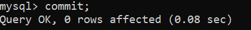
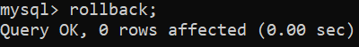
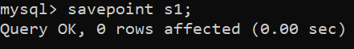

A CODING BLOG BY HIMANSHU CHOPRA...
For Tutorials On DBMS You Can Visit These Buttons
A CODING BLOG BY HIMANSHU CHOPRA...
For Tutorials On DBMS You Can Visit These Buttons
TRANSACTION CONTROL LANGUAGE
TCL Commands in SQL
In SQL, TCL stands for Transaction control language.
A single unit of work in a database is formed after the consecutive execution of commands is known as a
transaction.
There are certain commands present in SQL known as TCL commands that help the user manage the
transactions that take place in a database.
COMMIT. ROLLBACK and SAVEPOINT are the most commonly used TCL commands in SQL.
List of TCL commands:
In this section, We will cover the following TCL commands as follows.
1.COMMIT
2.ROLLBACK
3.SAVEPOINT
1.COMMIT
This command is used to save the data permanently.
Whenever we perform any of the DML command like -INSERT, DELETE or UPDATE, these can be rollback if the
data is not stored permanently. So in order to be at the safer side COMMIT command is used.
Syntax:
commit;

This command is used to get the data or restore the data to the last savepoint or last committed state.
If due to some reasons the data inserted, deleted or updated is not correct, you can rollback the data
to a particular savepoint or if savepoint is not done, then to the last committed state.
Syntax:
rollback;
Example –

This command is used to save the data at a particular point temporarily, so that whenever needed can be
rollback to that particular point.
Syntax:
Savepoint A;
